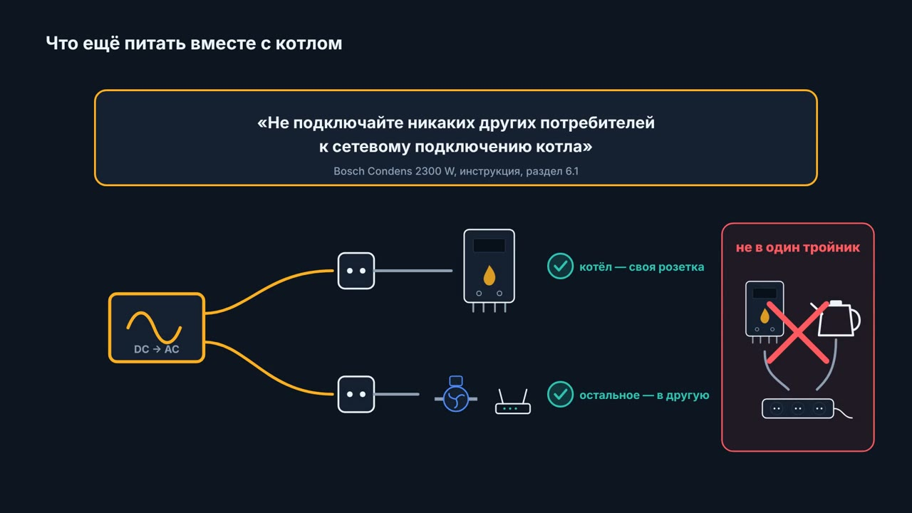
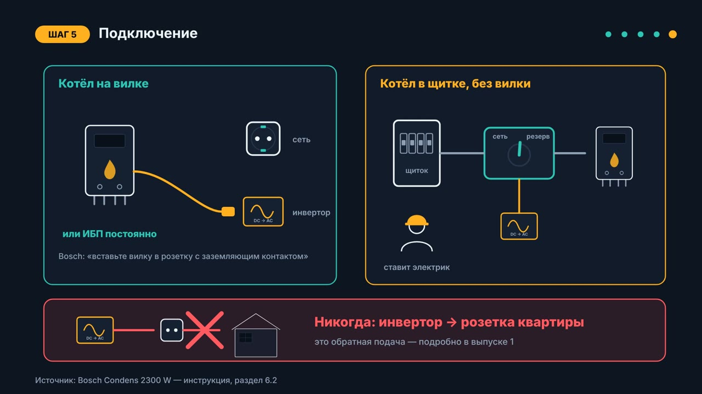

Резервне живлення газового котла
Газ є, а світло вимкнули — і батареї холонуть: насос, вентилятор, розпалювання й автоматика котла живляться від розетки. Котел споживає близько 100 Вт, тому його можна тримати в роботі від акумулятора з інвертором. Рахуємо покроково й підключаємо безпечно.
Ролик російською, 6:31. Не відкривається? Дивитися на YouTube або читайте розбір нижче — у ньому все те саме.
Впишіть потужність свого котла й час відключення — калькулятор порахує акумулятор, інвертор і скільки годин протримається ваш акумулятор.
Відкрити калькуляторНавіщо котлу електрика
Насос жене гарячу воду батареями. У турбованих і конденсаційних котлів вентилятор подає повітря в пальник і виводить дим. Електроніка підпалює газ, стежить за полум'ям і тримає температуру. Зникає напруга — автоматика зупиняє котел. Так задумано для безпеки: наше завдання — не обійти захист, а дати котлу його ~100 Вт, поки мережі немає.
1Потужність котла
Відкрийте паспорт, таблицю технічних характеристик, і знайдіть рядок «максимальна споживана потужність». Наприклад, у Bosch Condens 2300 W — 88 Вт в одноконтурної моделі та 110 Вт у двоконтурної. Це максимум: насос і вентилятор на повній швидкості. Зазвичай котел бере менше — пальник то вмикається, то гасне.

Як виміряти точно
Розетковий ватметр — перехідник з екраном між розеткою та вилкою. Беріть модель із заземлювальним контактом. Увімкніть котел через ватметр, скиньте лічильник і залиште на добу — краще в морозний день; для двоконтурного — звичайний день із душем і посудом. Через добу поділіть кіловат-години на 24 години.
Середнє підставте в калькулятор — акумулятор вийде меншим. А інвертор усе одно обирайте за паспортною потужністю: під час пуску котел бере більше за середнє.
2Енергія й акумулятор
Рахуємо із запасом, за максимальною потужністю, на 6 годин відключення. ККД інвертора 0,9, холостий хід 8 Вт і розряд літієвого акумулятора до 80 % — як у випуску 1.
Акумулятор LiFePO4 на 100 А·год — це 1280 Вт·год, він справляється із запасом. На 12 годин потрібно близько 1953 Вт·год — два такі акумулятори. І це за максимумом: насправді котел протримається довше.

Що ще живити разом із котлом
Часто є другий насос — на теплу підлогу або бойлер (наприклад, у Grundfos ALPHA2 споживана потужність від 3 до 34 Вт) і роутер — близько 12 Вт. Складайте їх із котлом і рахуйте за тією самою формулою. Але в інструкції Bosch сказано: не підключайте інших споживачів до мережевого підключення котла. Тому котел — у свою розетку інвертора, решту — в інші, але не в один трійник із котлом.

3Інвертор
Тільки з чистою синусоїдою: на модифікованій двигуни насоса й вентилятора сильніше гріються. Потужність — із запасом на пуск мотора, за правилом нашого калькулятора: 110 Вт × 5 = 550 Вт, отже, інвертор від 600 Вт тривалої потужності.
Є й готове рішення — ДБЖ для котлів. Наприклад, у BAXI Reserve на виході синусоїда, потужність до 300 ВА, до нього підключають акумулятор на 12 В. Він працює в режимі онлайн, тому котел не помічає відключення.

4Фаза й заземлення
Котли чутливі до підключення. Navien в інструкції вимагає під час пуску перевірити фазування й наявність заземлення, а Fondital забороняє підключення до електрообладнання без правильно виконаної системи заземлення. Під час роботи від інвертора правило те саме. Якщо від інвертора котел не розпалюється й показує помилку полум'я — не розбирайте котел, покличте електрика: нехай перевірить фазування й заземлення на виході інвертора за його інструкцією.
5Підключення
Котел на вилці: в інструкції Bosch так і написано — вставте вилку в розетку із заземлювальним контактом. При відключенні вилку переставляють у розетку інвертора або тримають котел на ДБЖ постійно. Котел підключений до щитка напряму, без вилки, — електрик поставить розетку або перемикач «мережа — резерв».

П'ять помилок
- Інвертор із модифікованою синусоїдою — насос і вентилятор гріються.
- Трійник із чайником або обігрівачем — потужний прилад перевантажить інвертор, і котел зупиниться разом із ним.
- Автомобільний акумулятор. Victron прямо пише: глибокий розряд швидко руйнує стартерний акумулятор. Потрібен акумулятор для глибоких циклів — літієвий або спеціальний свинцевий.
- Забути про фазування й заземлення.
- Інвертор у розетку квартири — зворотна подача.
Джерела
- Bosch Condens 2300 W — інструкція з монтажу й техобслуговування: 88 / 110 Вт (табл. 41, с. 74); вилка в розетку із заземлювальним контактом (розділ 6.2) і заборона інших споживачів на підключенні котла (розділ 6.1), с. 27.
- Navien Deluxe C Plus — посібник: перевірити фазування й наявність заземлення (с. 61).
- Fondital KC 24 — інструкція: заборона підключення без заземлення (с. 4).
- BAXI Reserve — листівка: синусоїда, до 300 ВА, батарея 12 В, режим онлайн.
- Grundfos ALPHA2 25-60 130 — аркуш даних: споживана потужність 3–34 Вт.
- Victron Energy — типи акумуляторів: глибокий розряд руйнує стартерний акумулятор.
- Samlex — чиста й модифікована синусоїда.
Перевірено 15 листопада 2026 р. Знайшли помилку — напишіть у коментарях під роликом.